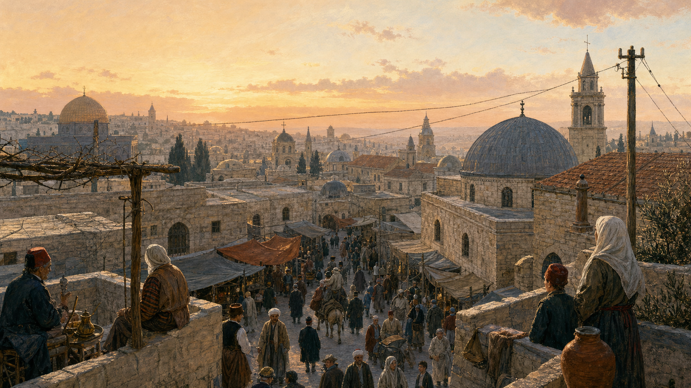
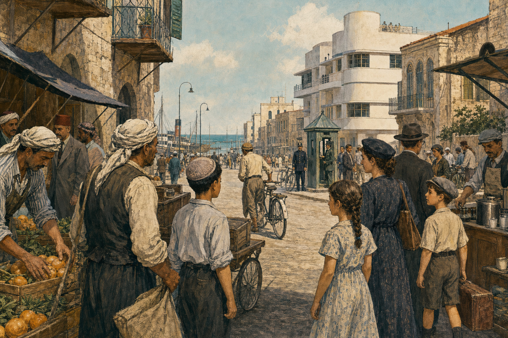
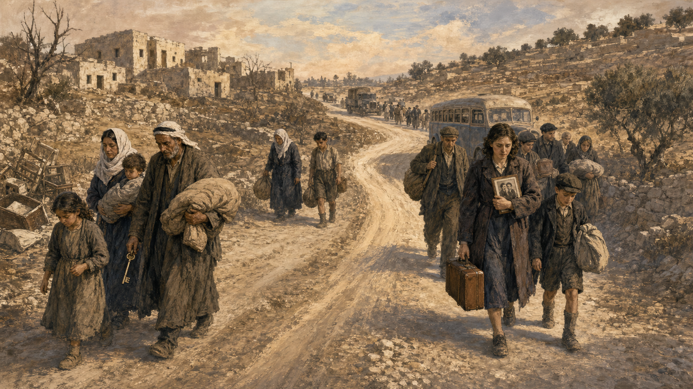

关键地点关系
1947年冬天，一个十三岁的男孩站在雅法港附近的屋顶上。海风把晾晒的床单吹得鼓起来，远处传来船笛，街角的咖啡馆里有人争论联合国刚刚通过的分治方案。男孩并不知道，几个月后，他熟悉的街道会变成战场；更不知道，从那以后，同一片土地上的两个孩子，会从祖父母那里听到两个几乎相反的1948年。
我们给这个男孩起名叫萨米。街的另一头，还住着一个同岁的女孩，叫米里亚姆。她的父母从波兰来到这里，家里只有一只从欧洲带来的旧皮箱。萨米和米里亚姆是虚构的合成人物，他们不是某一份档案里的真人；但他们身边发生的事、他们可能听见的争论，都来自真实的历史环境。使用合成人物，是为了让我们进入历史，却不能把想象冒充证据。
如果萨米问祖父：“这里是谁的家？”祖父会指着祖辈的橄榄园、清真寺和墓地。如果米里亚姆问父亲同一个问题，父亲会讲耶路撒冷、希伯来文、逾越节祷词，也会说起欧洲一次又一次驱逐犹太人的历史。两个人都不是在撒谎。真正困难的问题是：当两个真实的归属感指向同一片土地，政治应当怎样安排今天活着的人？
“以色列—巴勒斯坦冲突”不等于“犹太教—伊斯兰教冲突”
宗教提供了圣地、符号和记忆，但现代冲突的主轴是民族自决、土地、国家、移民、难民、安全与权利。巴勒斯坦人中有穆斯林也有基督徒；犹太复国主义者中既有宗教人士，也有许多世俗社会主义者。把一切说成“宗教仇恨”，会漏掉英国统治、欧洲反犹主义、民族主义和现代战争这些关键发动机。
一块不断换名字的十字路口
先把镜头拉高。地中海东岸这块狭长土地，西边是海，东边是约旦河谷，北面通向叙利亚，南面连接埃及。商队、军队、朝圣者和难民都从这里经过。它面积不大，却处在亚洲、非洲和欧洲的连接处。谁控制这里，往往不仅为了这里本身，也为了道路、港口和帝国边界。
古代这里出现过以色列王国和犹大王国，也经历过亚述、巴比伦、波斯、希腊化诸王国、罗马、拜占庭、阿拉伯帝国、十字军、马穆鲁克与奥斯曼帝国的统治。犹太人与这片土地的历史、宗教和文化联系延续了数千年；即使多数犹太人散居世界各地，耶路撒冷仍在祷告与节日中占据中心位置，土地上也一直存在规模不等的犹太社群。
与此同时，几百年来生活在当地的阿拉伯语居民形成了自己的城镇、村庄、家族网络和地方认同。他们耕种、经商、纳税，也在奥斯曼帝国的行政框架中生活。到19世纪，现代“巴勒斯坦人”身份逐渐成形，但不能因为现代民族名称出现较晚，就说此前的人“不存在”。世界上许多民族国家都是近代形成的，法国人、意大利人、德国人的现代民族意识同样有形成过程。
这一区分很重要：古代历史联系是真实的，但古代王国不是现代房产证；当地居民的连续生活也是真实的，但连续居住本身不能抹去另一群人的历史联系。现代政治必须面对的是当时和今天的人，而不是让两千年前的军队替现代法庭判案。

19世纪末：旧帝国里的新速度
1880年代，巴勒斯坦仍属于奥斯曼帝国。火车、轮船、电报和欧洲资本正改变地中海世界。土地开始更频繁地被登记、买卖；领事馆和教会学校增多；雅法港把柑橘运往欧洲。城市在扩张，旧城墙外出现新社区。变化让一些人看到机会，也让另一些人担心失去土地和工作。
同一时期，欧洲犹太人面对另一种现代性。法国大革命以后，许多犹太人获得公民权，进入大学、报社、军队和商业社会；但反犹主义没有消失。俄国帝国发生针对犹太人的大规模暴力，法国的德雷福斯事件又表明：即使一名犹太军官完全认同自己的国家，也可能被偏见当作永远的外人。
一些犹太思想家因此提出：仅仅等待别人宽容不够，犹太人也需要像其他民族一样拥有政治上的家园。这就是现代犹太复国主义（Zionism）。1897年，西奥多·赫茨尔在瑞士巴塞尔主持第一次犹太复国主义者大会。运动内部并不一致：有人想立即建国，有人先建设社区；有人强调宗教，有人彻底世俗；也有不少犹太人反对复国主义，认为自己首先是德国人、英国人或社会主义国际主义者。
从1880年代起，一批批犹太移民来到奥斯曼巴勒斯坦。他们购买土地、建立农庄和城镇、复兴希伯来语。土地交易通常具有合法契约，但“合法”不等于“没有伤害”：有些土地由居住在外地的大地主出售，原本在土地上耕种的阿拉伯佃农可能因此失去生计。对新移民而言，这是在荒地上建立安全家园；对被挤出的农民而言，却是有人拿着一张他没参与签署的纸，告诉他祖辈耕作的田地不再属于他。
契约公平，就一定代表结果公平吗？
假设一家公司依法买下一个村庄周围的土地，而世代耕种但没有正式产权的农民必须离开。公司可以说“我付了钱”，农民可以说“你买走了我的生活”。政府应该保护哪一种权利？可以设计怎样的补偿和过渡？
英国把同一间屋子的钥匙，许给了不同的人
1914年，第一次世界大战爆发。奥斯曼帝国加入德国一方，英国则想击败奥斯曼、保护通往印度的交通线和苏伊士运河。为了赢得战争，英国同时对不同对象说了不同的话。
英国官员麦克马洪与麦加谢里夫侯赛因通信，讨论阿拉伯人在反抗奥斯曼后获得独立的可能。英国与法国又秘密签订《赛克斯—皮科协定》，划分两国在中东的势力范围。1917年11月，英国外交大臣贝尔福致信罗斯柴尔德勋爵，表示支持“在巴勒斯坦为犹太人民建立一个民族家园”，同时说不得损害当地非犹太社群的公民和宗教权利。
一封只有一百多词的信，后来像一块楔子打进历史：它承认一个散居民族的政治愿望，却把当时占人口多数的阿拉伯居民称为“非犹太社群”；它承诺保护他们的“公民和宗教权利”，却没有明确提到政治权利。 可阅读原件：《贝尔福宣言》英文全文
为什么英国这么做？答案不是单一阴谋。英国政府中有人同情犹太复国主义，有人出于基督教文化想象，有人希望争取国际犹太舆论，有人考虑战后帝国利益。历史决策往往不是一只手推动，而是多种动机在同一扇门上用力。
1917年12月，英国军队进入耶路撒冷。战后，国际联盟把巴勒斯坦委任给英国管理，1922年的委任统治文件纳入了支持“犹太民族家园”的条款，也要求保护所有居民的权利、发展自治机构。问题是：如果犹太民族家园继续扩大，而阿拉伯多数又要求自己决定政治未来，两项任务可能彼此冲突。英国成了裁判，也同时是制定规则的人。
一个词的分量：“民族家园”
宣言没有直接写“犹太国家”。支持者可以说它为犹太人的民族自决打开门；反对者则指出，它没有得到当地多数居民同意。后来英国官员和犹太复国主义者对这个词的终点是否必然是国家，也有不同解释。阅读政治文件时，要同时看写了什么、没写什么、谁有资格签字。
联合国关于巴勒斯坦问题的历史页面收录了委任统治、分治及历次战争的文件线索：History of the Question of Palestine。
两套学校、两种报纸，以及越来越窄的共同街道
英国托管时期，巴勒斯坦迅速现代化。港口扩建，道路增加，城市人口上升。犹太社群建立工会、学校、医疗体系、准政府机构和防卫组织；希伯来大学在耶路撒冷开学。特拉维夫从雅法旁边的新社区长成城市。一个尚未正式建国、却已经具备许多国家骨架的“犹太社会”逐渐形成。
阿拉伯社会也有报纸、政党、商会、学校和市政精英，却在组织、资金和国际支持上更分散。许多巴勒斯坦阿拉伯人要求建立代表多数居民的独立政府，并反对持续移民。他们看到的不是欧洲犹太人的绝境，而是自己可能在家乡变成少数的未来。
人口数字能解释紧张为何加速。英国托管初期，犹太人大约占当地人口的一成左右；到1947年，比例已超过三成。增长主要来自移民，尤其是1930年代纳粹迫害加剧之后。数字本身没有道德，但它会改变选举、土地、语言和国家归属的预期：少数群体担心永远没有安全，多数群体担心失去决定权。

冲突并非天天发生。人们做生意、搭同一班车、在医院相遇，也有人主张合作或建立双民族国家。但暴力事件会迅速摧毁日常信任。1920年与1921年发生骚乱；1929年，围绕西墙和圣地权利的紧张演变成大规模暴力，希伯伦的犹太社群遭到杀戮，阿拉伯居民也在其他地方被杀。每一场暴力都给下一场暴力准备了“我们早就知道他们会这样”的证据。
1936年，巴勒斯坦阿拉伯人发动大罢工，随后发展为反对英国统治和犹太移民的武装起义。英国一面派重兵镇压，一面调查政治方案。1937年的皮尔委员会首次正式建议分治：既然两个民族目标难以调和，不如把土地分开。分治从此进入国际政策工具箱。
1936—1939年的阿拉伯起义遭到严厉镇压。许多领导人被捕、流亡或死亡，武装力量被削弱。就在欧洲走向第二次世界大战时，巴勒斯坦阿拉伯社会失去了不少政治和军事组织能力。1939年，英国发布白皮书，限制犹太移民和土地购买，并设想十年内建立一个由阿拉伯人与犹太人共同组成的独立国家。阿拉伯方面认为来得太迟且不够彻底；犹太复国主义者则在欧洲犹太人最需要逃生通道时，把它视为背叛。
如果世界各国都可能关门，我们还能去哪里？
欧洲反犹主义越来越危险。一个没有主权、必须等待别人签证的民族，随时可能被拒之门外。“国家”因此不只是旗帜，而是一艘不能再被别国港口赶走的船。
为什么欧洲犯下的罪，要由我们交出家园来补偿？
当地人没有制造欧洲反犹主义，却发现大国正在用他们居住的土地解决欧洲问题。“安全家园”在一方耳中是避难，在另一方眼里可能是被替代。
当欧洲的大门关闭，地中海上挤满了没有国家的人
第二次世界大战和纳粹大屠杀改变了一切。纳粹德国及其合作者系统性杀害约六百万犹太人。欧洲许多国家的犹太社群被摧毁。战争结束时，幸存者走出集中营，却常常发现家已被占、亲人已经死亡、故乡仍有反犹暴力。
对一个初中生来说，“六百万”很容易变成没有重量的数字。可以把它换成学校：假设一所学校有一千人，那是六千所学校的全部师生。可是即使这样想象，仍不足以装下每个人的姓名、家庭和未完成的人生。
战争后，大批犹太幸存者住在欧洲难民营中，希望前往巴勒斯坦。英国仍执行移民限制，许多船只被拦截，乘客被送往塞浦路斯拘留营。美国大屠杀纪念馆的资料显示，1948年前后，数以万计的犹太难民试图绕过限制；以色列成立后，约十四万大屠杀幸存者在随后几年进入这个新国家。对他们来说，以色列的建立不是抽象民族理论，而是终于有人在边境说“你可以进来”。
但从萨米家的窗户看出去，故事完全不同。移民越多，阿拉伯居民越确信自己将失去多数地位。犹太地下组织与英国发生武装冲突，阿拉伯人与犹太人之间的袭击也持续发生。英国已经疲惫：战争掏空国力，驻军代价高昂，任何政策都同时遭到两边反对。1947年，英国把问题交给新成立的联合国。
为什么大屠杀不是冲突的“最初原因”，却是决定性的加速器？
犹太复国主义和移民在大屠杀前几十年已经出现，所以不能说以色列只是战后突然创造的；但大屠杀证明了犹太人缺乏主权保护可能产生怎样的灾难，也使建立犹太国家获得更强烈的国际支持和道德紧迫感。可参阅美国大屠杀纪念馆：战后难民。
一张多数人没有见过，却将决定他们命运的地图
联合国特别委员会提出分治方案：结束英国托管，建立一个犹太国家和一个阿拉伯国家，耶路撒冷及周边实行特殊国际管理，两国组成经济联盟。1947年11月29日，联合国大会通过第181号决议。表决是33票赞成、13票反对、10票弃权。
方案把大约55%的土地分给犹太国家，把约45%分给阿拉伯国家，耶路撒冷另行安排。为什么犹太国家分得相对更多，尽管犹太人口约占三分之一、私人拥有的土地比例更低？一部分原因是拟议犹太国包含人口稀少的内盖夫沙漠，也考虑未来犹太移民；但对巴勒斯坦阿拉伯人而言，这依然意味着一个外部机构把他们视为自己的国家分割，并把超过一半土地交给新国家。
主流犹太复国主义领导层接受方案，虽然不满意边界，也有更激进组织反对。他们看到的是国际承认的国家机会。阿拉伯高级委员会和周边阿拉伯国家拒绝方案，认为它违反多数居民自决原则。双方的选择各有逻辑，也各有代价：接受不是接受所有细节，拒绝也不自动等于拒绝和平；但在现实中，分治表决后，政治争论迅速变成战争。
- 1897第一次犹太复国主义者大会召开。
- 1917《贝尔福宣言》发表；英国军队占领耶路撒冷。
- 1922国际联盟确认英国对巴勒斯坦的委任统治。
- 1936巴勒斯坦阿拉伯人大罢工及起义开始。
- 1939英国白皮书限制犹太移民；欧洲大战爆发。
- 1947联合国大会第181号决议建议分治。
- 1948以色列宣布建国；战争扩大；巴勒斯坦难民问题形成。
请注意一个法律与现实的区别：联合国大会第181号决议是一项分治建议，不是一支自动执行边界的军队。英国不愿强制实施。当地已经有两个社会、多个武装组织和互不相容的目标。当英国撤离时，没有一个共同政府接过钥匙。
如果你在1947年的联合国，会投哪一票？
你只能从三种不完美方案中选：一，分成两个国家，但边界曲折、双方都有少数族群；二，建立一个共同国家，但多数决定可能让犹太人担心再次没有安全保障；三，继续国际托管，但当地人都不愿再受外国统治。先替每个方案写出最强理由，再作选择。
同一场战争，独立日与“大灾难”
分治表决后的第二天，暴力升级。最初阶段主要是托管地内部的犹太人与巴勒斯坦阿拉伯武装交战。道路被切断，车队遭伏击，城市混合社区崩解。双方都袭击过平民，报复像钟摆一样越来越重。
1948年4月，犹太地下组织伊尔贡和莱希袭击耶路撒冷附近的代尔亚辛村，造成大量村民死亡。消息和夸大的传言在阿拉伯社会引发恐慌，促使一些地方居民逃离。几天后，一支前往哈达萨医院的犹太车队遭阿拉伯武装袭击，数十名医护人员、教师和护卫死亡。把其中一件事删去，都会得到一个更容易愤怒、却更不完整的故事。
海法、雅法、提比里亚等城市的阿拉伯居民大量离开。有人逃避战火，有人因恐惧暴行而走，有人听从地方领导暂时撤离，有人在军事行动中被驱逐。不同地点、不同时间的原因并不相同。历史学界对具体比例、命令链和预先计划程度长期争论；较可靠的做法不是用一句“他们都是自愿走的”或“所有人都按统一计划被赶走”覆盖每个村庄，而是逐地研究军令、日记、人口记录与证词。
1948年5月14日下午，本—古里安在特拉维夫宣读《以色列国成立宣言》。宣言把犹太民族的历史联系、复国主义建设、大屠杀和联合国分治决议连在一起，承诺所有居民不分宗教、种族、性别享有完全平等的社会和政治权利，并向邻国伸出和平之手。美国很快给予事实承认，苏联随后也承认新国家。
第二天，英国托管正式结束，埃及、外约旦、叙利亚、黎巴嫩和伊拉克军队进入前托管地，战争变成国家间战争。但“阿拉伯一方”并非统一机器：各国有自己的目标，外约旦国王阿卜杜拉更关心控制拟议的阿拉伯国家领土；军队训练和指挥也不同。以色列则把多个犹太武装整合为国防军，并获得外部武器补给。

1949年停战时，以色列控制约前英国托管地的77%，比联合国分治方案分配的范围更大；约旦控制约旦河西岸和东耶路撒冷，埃及控制加沙地带。分治方案设想的阿拉伯国家没有成立。
约七十万巴勒斯坦阿拉伯人在战争中逃离或被驱逐，数百个村庄被废弃或摧毁。他们中的大多数无法返回家园，成为约旦、黎巴嫩、叙利亚、加沙和西岸的难民。巴勒斯坦人把这段经历称为Nakba，意为“大灾难”。有人仍保存房门钥匙，不是因为那把钥匙还能开门，而是因为它把“我们曾在那里生活”变成可以握在手里的证据。
与此同时，以色列犹太人把1948年记作独立战争：一个遭受长期迫害、刚经历灭绝性灾难的民族终于建立国家，并在看似力量悬殊的战争中生存下来。随后数年，大批大屠杀幸存者以及来自伊拉克、也门、摩洛哥、埃及等阿拉伯和穆斯林国家的犹太人迁入以色列。迁移原因包括迫害、战争环境、歧视、复国主义动员和各国不同政策。他们失去的家园，也成为以色列社会记忆的一部分。
独立：终于能够保护自己
核心记忆是生存、主权和归乡。大屠杀刚结束，邻国军队进入，新国家的胜利被理解为“再也不把命运交给别人”。
大灾难：家园在地图上消失
核心记忆是失地、流亡和无法返回。同一年不是建国，而是社会被打散，国家愿望没有实现。
这两种记忆可以同时真实，却不能自动互相抵消。理解以色列人的恐惧，不等于同意让巴勒斯坦人永久成为难民；承认巴勒斯坦人的灾难，也不等于否定犹太人的自决权或今天以色列人的家园。成熟的历史理解，不是给痛苦排座次，而是追问：怎样让一方的安全不再以另一方永远失去权利为代价？
绿色停战线、六日战争与“土地换和平”
1949年的停战线后来常被称为“绿线”，因为谈判地图上用绿色铅笔画出。它不是双方最终同意的永久国界，却逐渐成为讨论“两国方案”时的重要参照。绿线以内形成以色列；西岸由约旦控制，加沙由埃及管理。许多巴勒斯坦人生活在难民营中，等着一个越来越遥远的返回。
1967年6月，以色列与埃及、约旦、叙利亚爆发六日战争。以色列迅速取胜，占领西奈半岛、加沙地带、约旦河西岸、东耶路撒冷和戈兰高地。对以色列人而言，胜利消除了迫近的军事恐惧，并重新控制犹太教最重要的圣地；对巴勒斯坦人而言，剩余家园也进入以色列军事占领，又有数十万人逃离或被迫迁移。
联合国安理会第242号决议提出后来外交的基本公式：以色列从冲突中占领的领土撤军，各国在安全和公认边界内和平生存，并公正解决难民问题。英文文本中“从领土撤出”是否意味着“从全部领土撤出”长期存在解释争议。这再次提醒我们，外交文件里少一个定冠词，也可能承载几十年争论。
以色列开始在占领区建立定居点。支持者提出安全、历史和宗教联系；反对者认为，把本国平民迁入被占领土违反国际法、切割巴勒斯坦领土，也使未来国家越来越难建立。国际社会大多不承认以色列对东耶路撒冷的吞并，并普遍将西岸定居点视为非法；以色列政府对法律解释持不同意见。
1973年，埃及和叙利亚发动战争试图收复失地。战争震动了以色列，也让各方认识到军事胜利不能永久解决政治问题。1978年戴维营协议之后，以色列把西奈归还埃及，埃及成为第一个与以色列签署和平条约的阿拉伯国家。这是“土地换和平”确实成功过的例子：敌人不是天生只能做敌人。
巴勒斯坦民族解放运动则由巴勒斯坦解放组织（PLO）主导。早期PLO诉诸武装斗争，也发生针对平民的恐怖袭击；以色列对巴勒斯坦组织和周边国家实施军事行动，平民同样付出代价。1987年，第一次巴勒斯坦大起义从加沙难民营开始，罢工、示威、投石与以军镇压让世界重新看见：冲突不只是以色列与阿拉伯国家，也是占领者与被占领人口之间的冲突。
握手是真的，失败也是真的
1993年9月，白宫草坪上，以色列总理拉宾和PLO主席阿拉法特在美国总统克林顿面前握手。奥斯陆协议让以色列与PLO相互承认，建立巴勒斯坦民族权力机构，并设想通过数年谈判解决耶路撒冷、边界、定居点、难民和安全等最终问题。
照片看起来像故事的结尾，其实只是最难一章的开头。协议把最棘手的问题留到以后，却没有确保“以后”一定到来。西岸被划分为不同管理区，巴勒斯坦获得有限自治，但以色列仍控制关键边界、安全和大片区域。定居点继续扩张。巴勒斯坦人感觉临时安排正在变成永久占领；以色列人则在袭击中怀疑让步是否带来安全。
1995年，一名反对和平进程的以色列极右翼犹太人刺杀拉宾。巴勒斯坦激进组织哈马斯发动自杀式袭击。2000年以后第二次大起义爆发，袭击、军事围困、定点清除和大规模伤亡摧毁了互信。以色列修建隔离墙或安全屏障：它减少了进入以色列城市的袭击，却也在许多地段深入西岸，使巴勒斯坦人的通行、工作和土地受到严重影响。同一堵墙，在两边拥有不同名字和不同记忆。
2005年，以色列从加沙撤出定居点和常驻地面部队。2006年哈马斯赢得巴勒斯坦立法选举，次年与法塔赫冲突后控制加沙。以色列与埃及加强对加沙边界的封锁，以色列称其目的是阻止武器与袭击，批评者则指出封锁让两百多万平民长期承受出行、经济和物资限制。此后，以色列与哈马斯多次战争和交火，火箭弹、空袭与地面行动不断加深恐惧。
2023年10月7日，哈马斯及其他武装人员越过边界袭击以色列南部社区和音乐节，杀害平民并掳走人质。这是以色列历史上最严重的单日袭击。以色列随后在加沙发动大规模战争，目标是摧毁哈马斯并救回人质；战争造成极其严重的巴勒斯坦平民伤亡、流离失所和基础设施毁坏，也引发关于比例原则、人道援助、战争罪指控和战后安排的全球争论。
这里最需要守住一条逻辑：解释不等于辩护，谴责也不必二选一。我们可以同时说，蓄意杀害和绑架平民不可接受；国家有保护公民的权利；军事行动仍受国际人道法约束；巴勒斯坦平民不应为哈马斯的罪行集体受罚；以色列平民也不应被当作政府政策的替身。道德原则如果只在对自己喜欢的一方有利时才使用，就不再是原则。
遇到伤亡数字，先问四件事
谁统计？统计到哪一天？“死亡”“确认身份”“战斗人员”分别怎样定义？后续是否修订？战争中的数字会变化，也会被政治使用。不要因为数字可能不精确就否认苦难，也不要把未经核实的即时数字当成永远不变的定论。本篇因此不把持续变化的伤亡总数写死在正文里。
所以，以色列这个国家究竟是怎么来的？
现在可以给出一个不靠口号的答案。
以色列不是1948年凭空出现的。它来自犹太人与这片土地延续数千年的历史和文化联系，来自19世纪欧洲民族主义时代形成的犹太复国主义，来自数十年移民、购地、建城和准国家机构建设，也来自欧洲反犹迫害与大屠杀制造的生存危机。英国的《贝尔福宣言》和委任统治为这一运动提供了国际政治框架，联合国分治决议给予建立犹太国家重要的国际合法性来源，1948年战争则决定了国家实际控制的边界。
但以色列的建立也不是一块无主之地等待主人回来。那里有占人口多数、拥有城镇村庄和政治愿望的巴勒斯坦阿拉伯社会。这个社会没有同意由外部大国安排分治，并在1948年战争中遭到破坏，约七十万人失去家园。巴勒斯坦国家没有按分治方案建立，难民返回、赔偿和国家地位问题一直没有解决。
因此，两句常见说法都不完整。“这只是犹太人回到自己的土地”遗漏了在那里生活的人和1948年的灾难；“这只是欧洲殖民者突然抢走巴勒斯坦”又遗漏了犹太人的古老联系、长期当地社群、合法移民与购地，以及一个遭迫害民族真实的自决愿望。历史不是在两句宣传语里选一句，而是有勇气把两句都装不下的事实留下来。
今天的核心也不是裁定谁的祖先最早到达。现代以色列人已经在那里出生数代，不可能被“送回欧洲”，何况许多人的祖辈来自中东和北非；巴勒斯坦人也不是可以从地图上擦除的人口，他们拥有民族自决、自由和安全生活的权利。任何可持续方案都必须同时容纳这两个现实。
历史能解释人们为什么害怕，却不能替他们决定永远伤害谁。真正困难的和平，不要求任何一方忘记自己的故事，而要求他们承认：对方也不是自己故事里的道具。
把地图收起来，先谈人
下面六个问题可以分两轮聊。第一轮让孩子先说，家长只追问“为什么”；第二轮交换立场，各自替自己不赞同的一方说出最强理由。
- 如果一个民族在许多国家都遭受迫害，它是否有权建立自己的国家？如果建国地点已有居民，这项权利应受什么限制？
- 1947年，犹太领导层接受分治、阿拉伯领导层拒绝分治。你认为双方各自最合理的理由是什么？各自最大的误判又是什么？
- “合法买地”与“世代耕种”冲突时，怎样的制度才比较公平？请设计一项当时可能减少冲突的政策。
- 为什么1948年可以同时是“独立”与“大灾难”？承认其中一个名称，会不会必然否定另一个？
- 安全和自由发生冲突时，政府可以限制普通人到什么程度？什么证据能证明限制是必要而非惩罚？
- 如果让你写一条和平协议的第一句，你会先承认哪两个事实？为什么必须把它们写在同一句里？
这篇故事依据什么？
本篇把原始政治文件、联合国历史材料、以色列官方文本与大屠杀研究资料交叉使用。联合国巴勒斯坦问题页面有明确的机构立场，因此不能单独代表全部历史解释；以色列政府资料同样代表国家叙事。把不同来源并置，正是为了让读者看到“资料”与“解释资料的人”之间的距离。
- 联合国：巴勒斯坦问题历史。包含英国托管、1947年分治、1948与1967年战争等基本时间线。
- 联合国：《巴勒斯坦问题的起源与演变》。五个部分覆盖1917—2000年，适合查找文件脉络。
- 耶鲁法学院 Avalon Project：《贝尔福宣言》全文。建议特别观察“民族家园”与“非犹太社群”的措辞。
- 以色列政府：建国宣言及历史说明。可直接阅读建国者如何陈述合法性、平等与和平承诺。
- 美国大屠杀纪念馆：难民。解释战前、战后犹太难民为何难以找到接收国。
- 美国大屠杀纪念馆：大屠杀之后。介绍流离失所者营地、移民路线与巴勒斯坦目的地。
- 联合国：巴勒斯坦问题事件年表。适合对照年份，但不应替代更完整的历史著作。